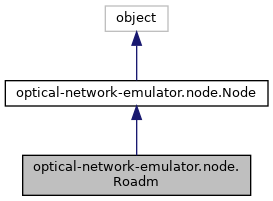

Inheritance diagram for optical-network-emulator.node.Roadm:

Collaboration diagram for optical-network-emulator.node.Roadm:
Public Member Functions | |
| def | __init__ (self, name, insertion_loss_dB=17, reference_power_dBm=0, preamp=None, boost=None, monitor_mode=None, debugger=False) |
| def | get_optical_signals (self) |
| def | reset (self) |
| def | monitor_query (self) |
| def | include_optical_signal_in_roadm (self, optical_signal, power=None, ase_noise=None, nli_noise=None, in_port=0) |
| def | remove_switch_rule (self, rule_in_port, rule_signal_index, rule_out_port) |
| def | check_switch_rule (self, in_port, out_port, signal_indices) |
| def | install_switch_rule (self, in_port, out_port, signal_indices, src_node=None) |
| def | update_switch_rule (self, in_port, signal_index, new_port_out, switch=False) |
| def | delete_switch_rule (self, in_port, signal_index, switch=False) |
| def | delete_switch_rules (self) |
| def | power_divergence (self, optical_signals, in_port) |
| def | can_switch (self, in_port, safe_switch) |
| def | can_switch_from_lt (self, src_node, safe_switch) |
| def | switch (self, in_port, src_node, safe_switch=False) |
| def | prepropagation (self, port_out_to_port_in_signals, src_node) |
| def | compute_carrier_attenuation (self, in_port, amp=None) |
| def | process_att (self, out_port, in_port, optical_signals, src_node, dst_node, link, amp=None) |
| def | propagate (self, out_port, in_port, optical_signals) |
| def | route (self, out_port, safe_switch) |
| def | set_boost_gain (self, gain_dB) |
| def | set_preamp_gain (self, gain_dB) |
| def | set_reference_power (self, ref_power_dBm, ch_index=None) |
| def | fast_switch (self) |
 Public Member Functions inherited from optical-network-emulator.node.Node Public Member Functions inherited from optical-network-emulator.node.Node | |
| def | __init__ (self, name, debugger=True) |
| def | set_output_port (self, dst_node, link, output_port=-1) |
| def | set_input_port (self, src_node, link, input_port=-1) |
| def | include_optical_signal_in (self, optical_signal, power=None, ase_noise=None, nli_noise=None, in_port=0) |
| def | include_optical_signal_out (self, optical_signal, power=None, ase_noise=None, nli_noise=None, out_port=None) |
| def | remove_optical_signal (self, optical_signal) |
| def | remove_signal_from_out_port (self, port_out, optical_signal) |
| def | reset_component (self) |
| def | describe (self) |
| def | __repr__ (self) |
Public Attributes | |
| switch_table | |
| port_check_range_out | |
| check_range_th | |
| node_to_rule_id_in | |
| rule_id_to_node_in | |
| monitor | |
| insertion_loss_dB | |
| reference_power_dBm | |
| target_output_power_dBm | |
| port_to_optical_signal_power_in | |
| preamp | |
| boost | |
| Public Attributes inherited from optical-network-emulator.node.Node | |
| name | |
| debugger | |
| ports_in | |
| port_to_node_in | |
| node_to_port_in | |
| link_to_port_in | |
| ports_out | |
| port_to_node_out | |
| node_to_port_out | |
| port_to_link_out | |
| port_to_optical_signal_in | |
| optical_signal_to_port_in | |
| port_to_optical_signal_out | |
| optical_signal_to_port_out | |
| output_port_base | |
| input_port_base | |
Additional Inherited Members | |
| Static Public Attributes inherited from optical-network-emulator.node.Node | |
| int | input_port_base = 0 |
| int | output_port_base = 0 |
Detailed Description
This implementation of Reconfigurable Optical Add/Drop Multiplexing nodes considers only common ports. That is, not including the internal connections between reconfiguration components (i.e., WSSs).
Constructor & Destructor Documentation
◆ __init__()
| def optical-network-emulator.node.Roadm.__init__ | ( | self, | |
| name, | |||
insertion_loss_dB = 17, |
|||
reference_power_dBm = 0, |
|||
preamp = None, |
|||
boost = None, |
|||
monitor_mode = None, |
|||
debugger = False |
|||
| ) |
:param name: string, name tag of ROADM
:param insertion_loss_dB: int, linear insertion loss of ROADM (default 17 dB)
:param reference_power_dBm: int,
reference power for ROADM-variable optical attenuator (VOA) - (default 0 dBm)
:param preamp: Amplifier object
:param boost: Amplifier object
:param monitor_mode: Monitor object
Member Function Documentation
◆ can_switch()
| def optical-network-emulator.node.Roadm.can_switch | ( | self, | |
| in_port, | |||
| safe_switch | |||
| ) |
Check if switching is possible (i.e., no loops)
:param in_port: int, input port triggering switching
:param safe_switch: boolean, indicates whether it needs
to check for switch feasibility.
◆ can_switch_from_lt()
| def optical-network-emulator.node.Roadm.can_switch_from_lt | ( | self, | |
| src_node, | |||
| safe_switch | |||
| ) |
Check all input ports for signals coming from a LineTerminal.
:param src_node: LineTerminal object
:param safe_switch: boolean, indicates whether it needs
to check for switch feasibility.
◆ check_switch_rule()
| def optical-network-emulator.node.Roadm.check_switch_rule | ( | self, | |
| in_port, | |||
| out_port, | |||
| signal_indices | |||
| ) |
Check if there are conflicting rules switching signals with equal frequencies on the same output port. If so, delete the previously allocated rule, and remove the signal from the output port and propagate this removal (modeling blocking that signal and cleaning the data structures). :param in_port: int, input port :param out_port: int, output port :param signal_indices: int or list, signal indices
◆ compute_carrier_attenuation()
| def optical-network-emulator.node.Roadm.compute_carrier_attenuation | ( | self, | |
| in_port, | |||
amp = None |
|||
| ) |
Compute the total power at an input port, and
use it to compute the carriers attenuation
:param in_port: int, input port for total power calculation
:param amp: Amplifier object, if there are boost and preamp
the signals are contained within these objects
◆ delete_switch_rule()
| def optical-network-emulator.node.Roadm.delete_switch_rule | ( | self, | |
| in_port, | |||
| signal_index, | |||
switch = False |
|||
| ) |
Delete a switch rule from switch_table and remove the signal(s)
associated with that rule at a Node level. Then switch.
Switch rules are identified by in_port and signal_index
:param in_port: int, input port associated with switch rule
:param signal_index: int, signal index associated with switch rule
:param switch: boolean, , specify if we want to switch
to avoid unecessary switching checkups
in self.can_switch()
◆ delete_switch_rules()
| def optical-network-emulator.node.Roadm.delete_switch_rules | ( | self | ) |
Delete all switching rules
◆ fast_switch()
| def optical-network-emulator.node.Roadm.fast_switch | ( | self | ) |
Call switch for all switching rules with safe_switch=True
◆ include_optical_signal_in_roadm()
| def optical-network-emulator.node.Roadm.include_optical_signal_in_roadm | ( | self, | |
| optical_signal, | |||
power = None, |
|||
ase_noise = None, |
|||
nli_noise = None, |
|||
in_port = 0 |
|||
| ) |
Include optical signals in preamp if object exists, and include input signals at a Node level :param optical_signal: OpticalSignal object :param in_port: int, input port
◆ install_switch_rule()
| def optical-network-emulator.node.Roadm.install_switch_rule | ( | self, | |
| in_port, | |||
| out_port, | |||
| signal_indices, | |||
src_node = None |
|||
| ) |
Switching rule installation, accessible from a Control System :param in_port: input port for incoming signals :param out_port: switching/output port for incoming signals :param signal_indices: int or list, signal index or indices :param src_node: source node :return:
◆ power_divergence()
| def optical-network-emulator.node.Roadm.power_divergence | ( | self, | |
| optical_signals, | |||
| in_port | |||
| ) |
Check if the power state of the incoming signals to be switched are different from the previous power state at the same input port
◆ prepropagation()
| def optical-network-emulator.node.Roadm.prepropagation | ( | self, | |
| port_out_to_port_in_signals, | |||
| src_node | |||
| ) |
Preparing structures for propagation :param port_out_to_port_in_signals: dict, hash of switch rules :param src_node: LineTerminal, ROADM or Amplifier object
◆ process_att()
| def optical-network-emulator.node.Roadm.process_att | ( | self, | |
| out_port, | |||
| in_port, | |||
| optical_signals, | |||
| src_node, | |||
| dst_node, | |||
| link, | |||
amp = None |
|||
| ) |
Compute the attenuation effects at the ROADM
:param out_port: int, output port (direction of signals)
:param in_port: int, input port (direction of signals)
:param optical_signals: list of optical signals
:param src_node: LineTerminal or Amplifier object
:param dst_node: LineTerminal or Amplifier object
:param link: Link object (direction of signals)
:param amp: Amplifier object, if there are boost and preamp
the signals are contained within these objects
◆ propagate()
| def optical-network-emulator.node.Roadm.propagate | ( | self, | |
| out_port, | |||
| in_port, | |||
| optical_signals | |||
| ) |
Compute physical layer simulation for one direction given by the out_port :param out_port: int, output port (direction of signals) :param in_port: int, input port (direction of signals) :param optical_signals: list of optical signals
◆ remove_switch_rule()
| def optical-network-emulator.node.Roadm.remove_switch_rule | ( | self, | |
| rule_in_port, | |||
| rule_signal_index, | |||
| rule_out_port | |||
| ) |
Removes a switch rule from switch_table and removes the signal object from the output port to model blocking
◆ route()
| def optical-network-emulator.node.Roadm.route | ( | self, | |
| out_port, | |||
| safe_switch | |||
| ) |
Calling route will continue to propagate the signals in this link
:param out_port: int, output port indicating direction
:param safe_switch: boolean, indicates whether it needs
to check for switch feasibility.
◆ set_boost_gain()
| def optical-network-emulator.node.Roadm.set_boost_gain | ( | self, | |
| gain_dB | |||
| ) |
Configure the gain of the boost amplifier and call fast_switch() :param gain_dB: int or float, gain to set
◆ set_preamp_gain()
| def optical-network-emulator.node.Roadm.set_preamp_gain | ( | self, | |
| gain_dB | |||
| ) |
Configure the gain of the preamp amplifier and call fast_switch() :param gain_dB: int or float, gain to set
◆ set_reference_power()
| def optical-network-emulator.node.Roadm.set_reference_power | ( | self, | |
| ref_power_dBm, | |||
ch_index = None |
|||
| ) |
Configure the reference power for ROADM to act upon, similar to setting a VOA reference power. and call fast_switch() :param gain_dB: int or float, gain to set
◆ switch()
| def optical-network-emulator.node.Roadm.switch | ( | self, | |
| in_port, | |||
| src_node, | |||
safe_switch = False |
|||
| ) |
Check for switch feasibility
Prepare switch internal configuration (i.e., preamp)
Propagate (physical layer simulation)
Route (relay signals to next Link)
:param in_port: int, input port triggering switching
:param src_node: LineTerminal, ROADM or Amplifier object
:param safe_switch: boolean, indicates whether it needs
to check for switch feasibility.
Note: check for switch feasibility unless performing tasks
independent of switching (i.e., EDFA gain configuration).
◆ update_switch_rule()
| def optical-network-emulator.node.Roadm.update_switch_rule | ( | self, | |
| in_port, | |||
| signal_index, | |||
| new_port_out, | |||
switch = False |
|||
| ) |
Update/create a new rule for switching
:param in_port: int, input port of existing rule
:param signal_index: int, signal index of existing rule
:param new_port_out: int, new output port
:param switch: boolean, specify if we want to switch
to avoid unecessary switching checkups
in self.can_switch()
The documentation for this class was generated from the following file:
- node.py